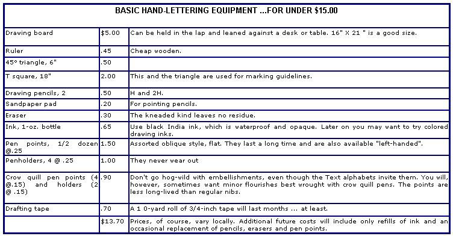

Hand-lettering is easy to learn, worth money ...and takes us back a little way toward the days when folks took pride in the graphic arts. Not that modern printing doesn't have its place, mind you (I'd hate to copy whole books by hand as the medieval monks did) but there's something cold about a graduation certificate with your name done in sloppy typing or stark computer printout. Look at your own collection of honors and you'll see what I mean.
You're not the only one who finds mechanized testimonials unsatisfying, either. Schools, honorary and social fraternities and sororities, church groups, social or civic clubs-anyone who hands out elaborate certificates-wants to make them as impressive as possible...and that's where you come in.
All you need to become a hand-lettering specialist sought after by organizations and printers alike is a steady hand, a slight inclination to the artistic and some routine self-discipline. If you fit that description, you can earn hundreds of spare dollars pleasantly, at home, in your own time.
I got my own start in the business as an art student at West Virginia University, when a friend rushed up to me in a frenzy. "Know anybody who can do Old English lettering?" he panted. "We've got to have 70 names put on certificates by next week and the printer can't make the deadline."
"Yes," I said, "me! I'll do it for a quarter a name." Much relieved, my friend agreed to the rate (about half the printer's fee) and handed me 75 forms. (I thought I'd need a few extra, since-to tell the truth-I had only a general idea of what Old English Gothic looked like and had never lettered at all except back in high school, when I was the only girl in my favorite course...mechanical drawing.)
The following week was a hard one, but the concentrated work paid off. Over the next few years countless organizations-on and off campus-approached me with lettering jobs, and I was launched in a fascinating and profitable sideline.
All the same, I don't recommend such a haphazard beginning to anyone else. Hindsight suggests that it's better to start by choosing an appropriate alphabet and learning to letter it with broad-point pen and India ink before going out after that first assignment.
You also should read up on the rich history of hand-lettering at the public library...or see your favorite art supply shop or bookstore for Alexander Nesbitt's comprehensive History and Technique of Lettering ($2.50 in paperback from Dover Publications).
Besides giving you a new perspective on the art of lettering and a wealth of curious information (why we dot the "i", for instance), such research will help you find the right alphabet to learn. Although you'll eventually want to offer a number of styles for special jobs, one good basic set of letters will see you through at first.
Your best choice is a variation of what was the major hand in Europe centuries before printing (Gutenberg chose a closely related face for his earliest work in the mid-1400's). This dignified, ornamental style-with its strong vertical downstrokes-had a "woven" appearance on early manuscripts and, consequently, was named Textur. Derivations of the face are called Text alphabets and include Old English, Old English Script, Black Letter, Gothic Style, Cloister Black, Cloister Text, Spire Gothic, etc.
Here are just a few examples of the many styles of Text and Script alphabets you can use on your lettering jobs.
Begin by choosing one Text alphabet and learning its majuscules and miniscules (capital and small letters). As you begin to master the forms, you'll discover that they lend themselves to certain liberties...and your personal style will begin to emerge.
At this stage-if you're hard up and had to borrow the copy of MOTHER you're reading-all you really need for equipment is a bottle of black India ink, a penholder and a point (say a Speedball size C-4).
Later you'll want to make further investments, as suggested in the list with this article or in the books you ran across during your research. These volumes will also tell you how to prepare and carry out your work...and you can get further hints from Ross F. George's compact Speedball instruction book, published by the Hunt Pen Company for about a dollar.
One point you should practice carefully is correct spacing and centering. Nobody likes cramped or irregular lettering placed lopsidedly on the certificate! When you're working on translucent, parchment or light paper, you can save yourself the trouble of measuring for each word if you slip a guideline sheet under the page. For hard-to-see-through heavier stock, I use a primitive light table made by laying a piece of thick glass across the arms of a child's chair and putting a gooseneck lamp underneath.
Once you've got your alphabet down pat and a sample or two prepared, you're ready for business, and you've got to give some thought to how much you're going to charge. In general, it's best to go by the prevailing market price. Call up a couple of local printers and find out their rates...and if possible get a look at their products too, just to see how you measure up.
It's best to establish a minimum fee of, say, 40 cents - 50 cents a name...mainly as a safeguard against that small persistent group which specializes in wheedling volunteer labor from the innocent. (If you've ever done posters, you'll know what I mean!) Possible factors for price adjustment will be your speed and skill, deadlines, size and number of certificates...and perhaps your feelings toward the soliciting organization. (Also, possibly, how broke you are at the time.) Be flexible at first, like any young business. Your rates will eventually stabilize.
Do you feel a little nervous about launching this venture? Never mind...start anyhow. Don't pass up any opportunity to make your availability known. Valuable contacts can be made through campus and local newspaper ads, printers who handle certificates and officers of various organizations. If your work is good and your price reasonable, most groups will prefer your fine hand-lettering to poorly rendered or mechanical substitutes. With a minimum effort on your part, work will start coming in...with a maximum, it won't ever stop!
|
 |
|
|